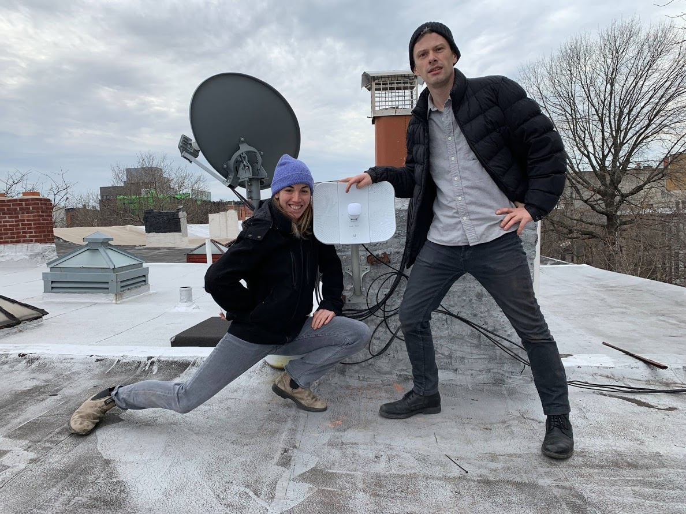
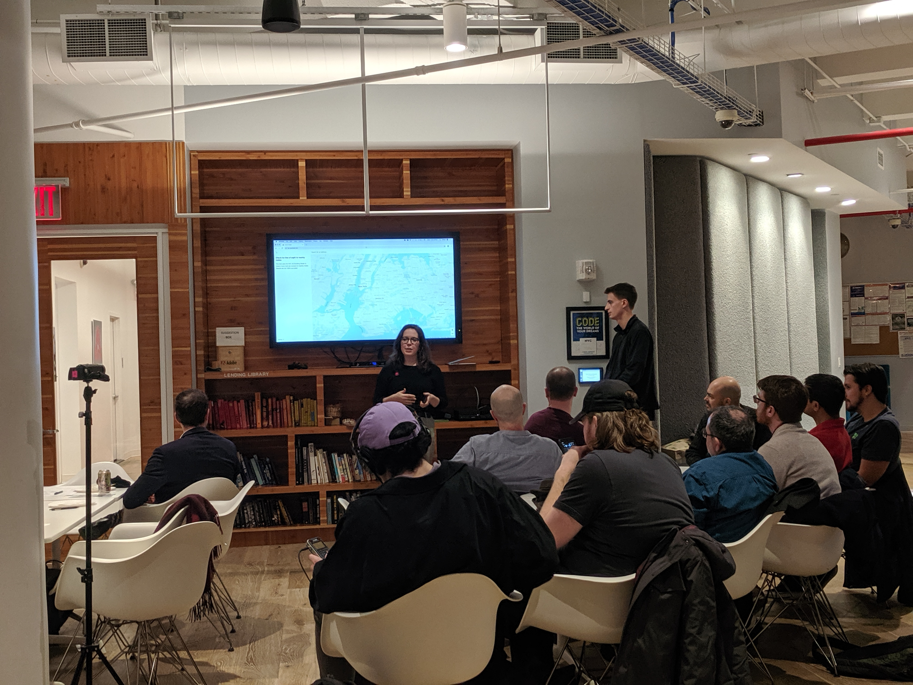
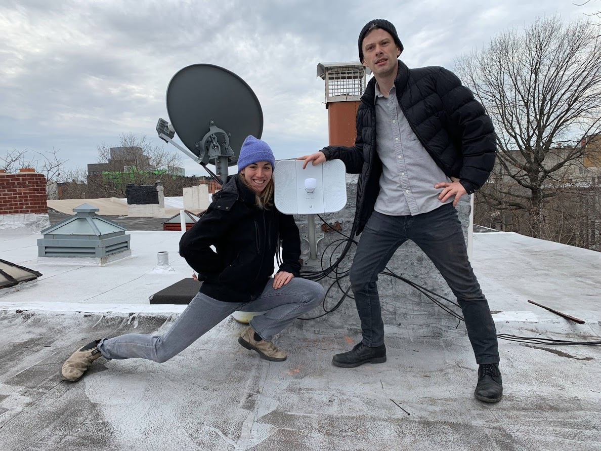
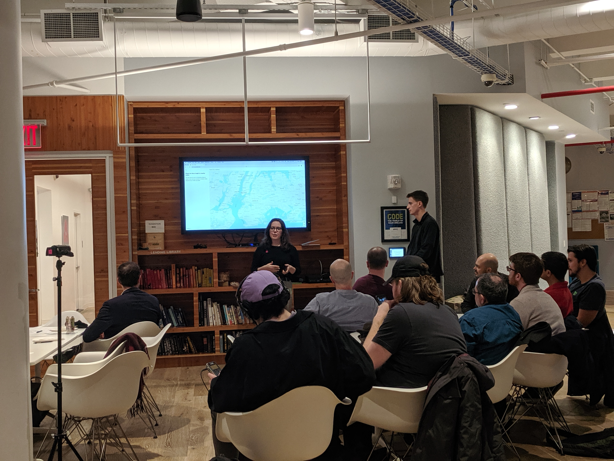

NYC Mesh is a diverse group of volunteers dedicated to ending the digital divide and extending high-speed, reliable internet to all New Yorkers. NYC Mesh is a neutral network and we do not monitor, collect, store or block any user data or content. I joined NYC Mesh to collaborate on panels and outreach about New Neutrality, and have since become more involved.
As a board member and installer with NYC Mesh, I participate in installations of affordable, community-owned WiFi in NYC residences and community spaces. I also work on the design, social media, front-end and marketing materials for outreach initiatives.
Additional information:
 


